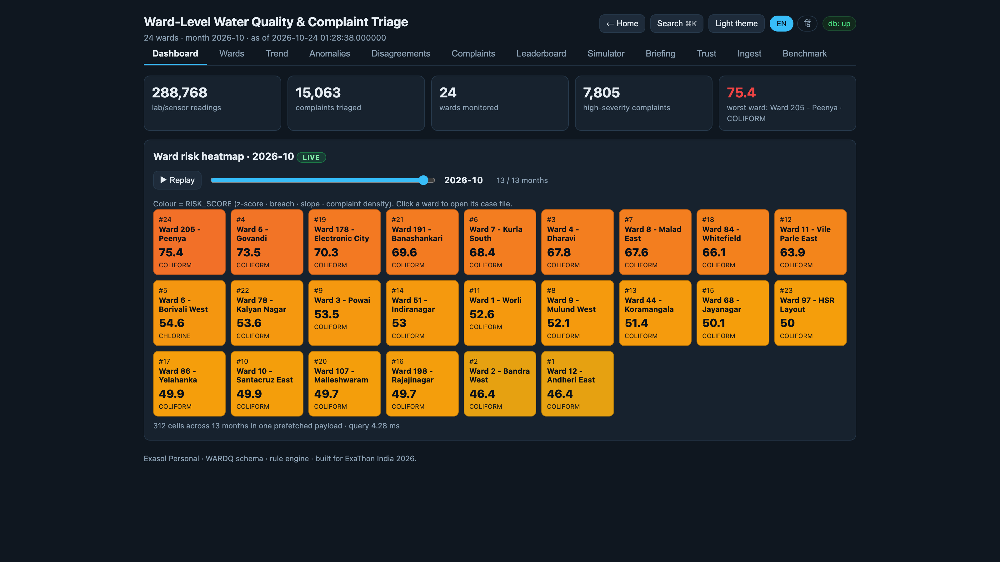
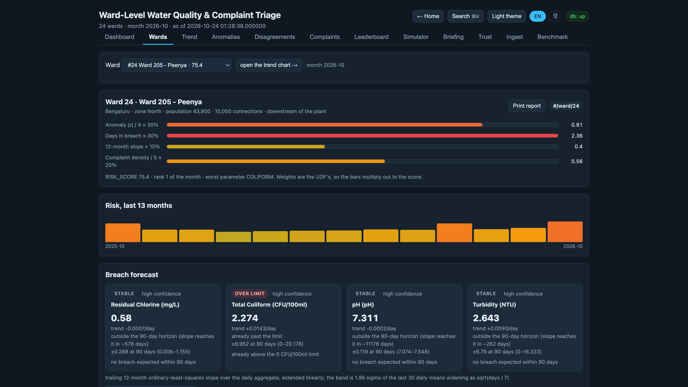
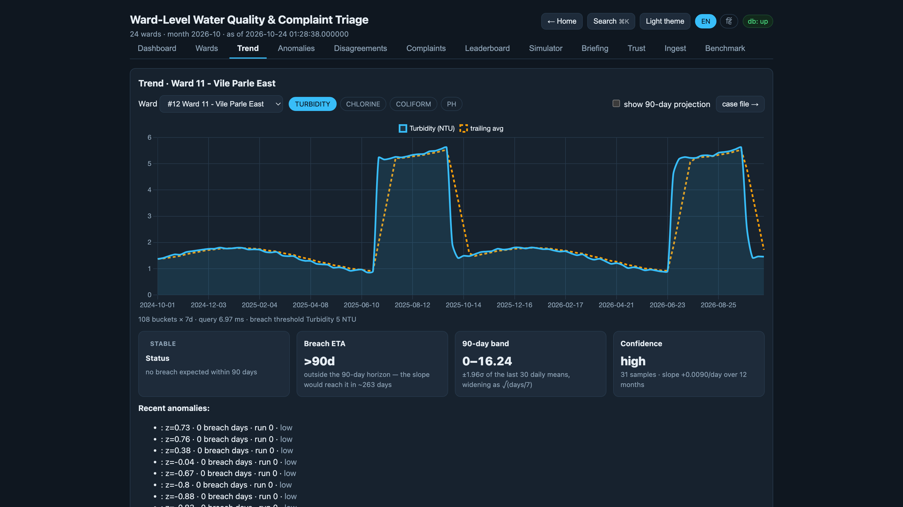
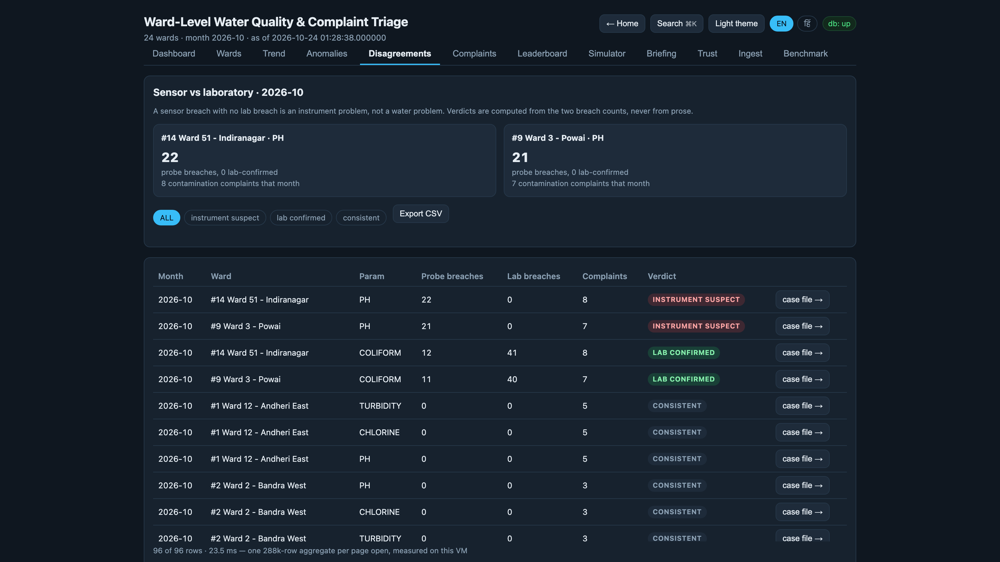
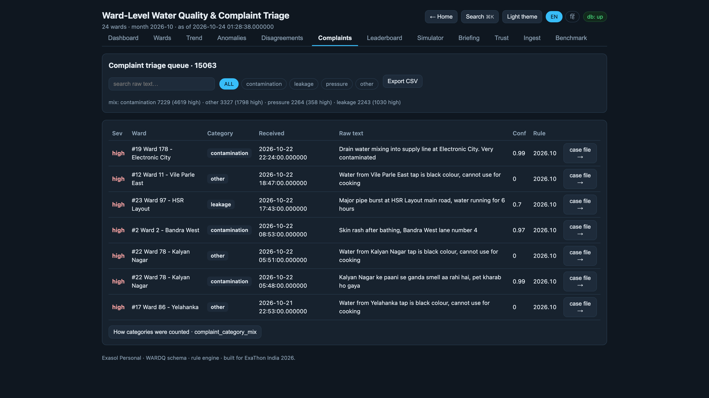
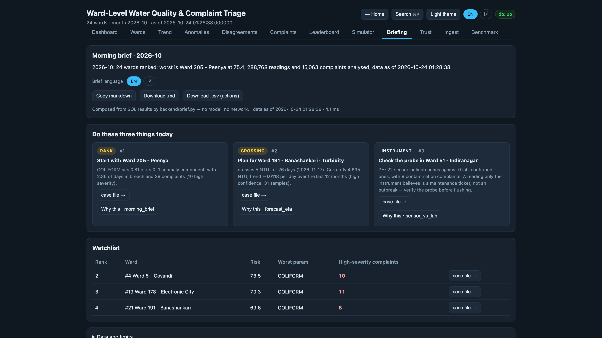
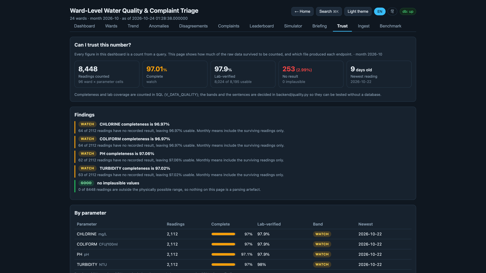
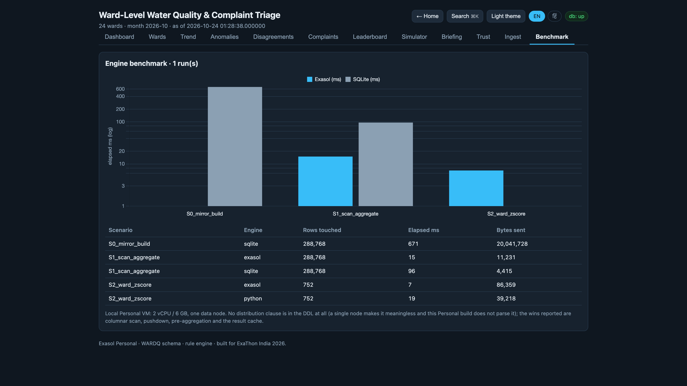

Holds the citizen signal but not the instruments, so the morning list is ordered by who complained loudest rather than by which ward is actually deteriorating.
Probe alarms and lab confirmations sit in two registers that never meet. One ward shows 22 pH alarms and zero confirmations — so the safe habit becomes ignoring alarms.
The wards downstream of the intake pay for contamination they did not produce, and their first real warning is the clinic queue.
By the time illness confirms a water failure, the exposure window has closed: the only action left is response. Before it, a flushing order, a chlorine correction or a probe calibration is still prevention — and a municipal dashboard that reports the week the illness is counted cannot tell the two apart.
Turbidity doubles at 11 pm and residual chlorine decays below 0.2 mg/L. The instrument knows the same night.
Coliform plates need incubation and a technician. Confirmation is a report, not an alarm.
Diarrhoeal cases show up in PHC registers after the exposure window has already closed.
Between the probe firing and the clinic filling there are about three weeks in which an intervention still changes the outcome. Nothing in the municipal stack is built to act inside that window — and that window is the product.
RISK_SCORE = 0.35·|z| + 0.30·breach days + 0.15·slope + 0.20·complaint density
Computed in-database by a Lua UDF over 288,768 rows, materialised so the page never waits on a window function.
Every figure carries a why this · file chip that opens the exact SQL in place. Eleven query recipes, one lineage registry, zero hand-typed numbers.
Three ranked actions, downloadable as Markdown and CSV; each 90-day breach ETA also lands in the officer’s calendar as a .ics with a 7-day alarm, plus a pull-based Atom feed.
24 of 96 ward × parameter pairs are already over their limit in the current month. The ranking is built from the instruments, then corroborated by the citizens — never the other way round.

The weights live in the UDF, not in a slide deck. Change them, re-materialise, and every ward on every screen moves together — an auditable policy, not a tuned opinion.

Ward 191 · Banashankari. High confidence, 31 samples. That is a flushing order three weeks before a boil notice.

Most teams only know how to raise alarms. This screen knows how to withdraw one — and that is the difference between a dashboard and a dispatch desk.

The rule table is data, so it can be tuned live in front of an audience without touching control flow — and tuned rules re-score all 15,063 messages in one pass.

#1 RANK start with the worst ward · #2 CROSSING plan for the ward that breaches in 26 days · #3 INSTRUMENT check the probe that only the instrument believes.

“Three percent of our readings are unusable. Here is the number, the cause, and the query — rather than a promise that the data is clean.”

Single node, and no DISTRIBUTED BY in the DDL — this Personal build does not parse it, so a distribution story would be fiction. The wins reported are columnar scan, predicate pushdown, pre-aggregation and the result cache.
Ninety days of probe and lab exports for one ward, the ward population table, and the WhatsApp group the complaints already arrive in. No integration project, no procurement cycle — the ingest path is a folder and a column map.